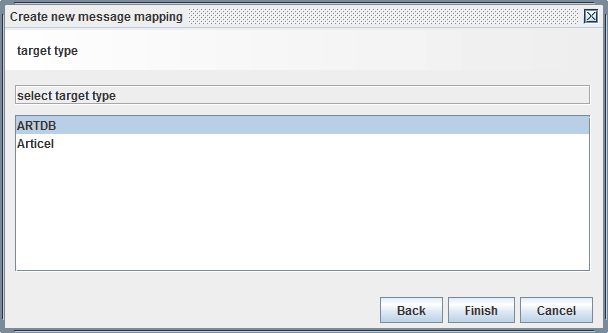

Target only mapping

Topic content
Concept
A Target only mapping is a graphical mapping generated automatically when in the creation dialog, the Type Target only mapping is selected. As the name says, it has not source message but creates an output message. This type of mapping may be usable to create some sort of dummy messages, e.g. an empty message having only a root element. But typically it has some parameters which then are used to create the output message.
Creation
Target only mappings are created in the same way than any other Message mapping.
When you the user has selected the type he has to select the target type.

Then click on the button an the graphical editor is opened to edit the mapping.
Configuration
To configure the mapping click on the entry in the scenario element tree. Because a Target only mapping is a graphical mapping it is configured like any other Graphical mapping.
The following picture shows a typical target only mapping which is used to create a simple XML data structure required from some external library.
Example of a target only mapping
As you can see the two parameters MessageId and imagePos are used to build the elements of a simple message structure. If this message is invoked it has no input message parameter but only the two parameters.
Assignment of parameters to a target only mapping
For further information about target only mappings see the configuration of graphical mappings.